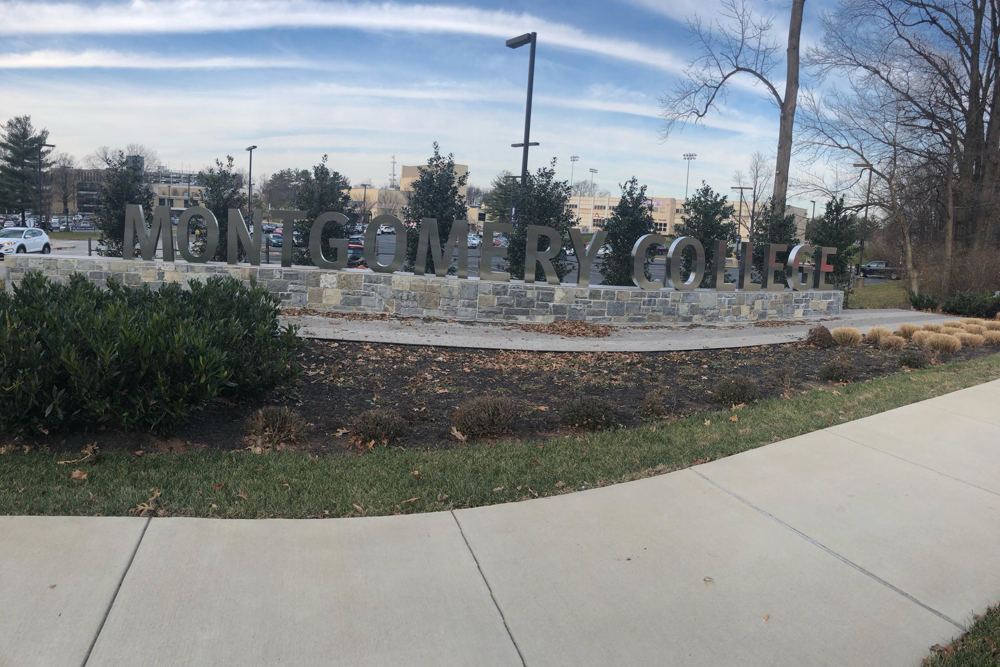

 多想停在这一刻 12.15.2018 种类: 反思&日志. 这个傍晚是那样的宁静。阳光在云朵里穿梭，云霞躺在纯净的蓝天上。耳畔的风轻轻吹着。我慢慢走着，回忆我在这所学校的两年半的时光。 阅读更多
无题 07.22.2018 种类: 诗歌. 这首诗作于一个下着雨的夏天，一个人在家的日子。想表达的有很多。但是一千个人的心中有一千种哈姆雷特。我更愿意留一个空白的题目，给读者留一个想象的空间。 阅读更多
四年 02.2017 种类: 反思&日志. 夜深人静。 一人穿着单薄的外套，伫立在门外的一盏灯下。点点星光给这 夜色披上了一缕薄纱。月不知躲在哪朵云后，隐匿起光芒。四年了，我来美国已经 四年了。 阅读更多